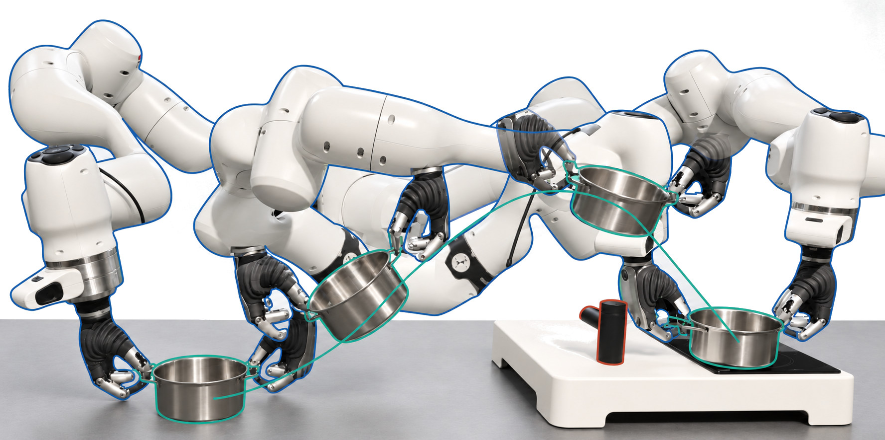
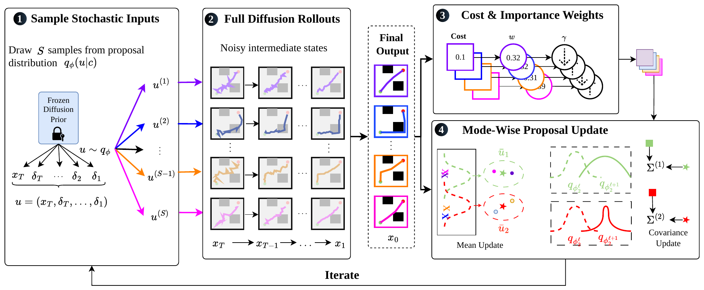
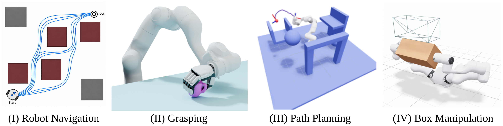
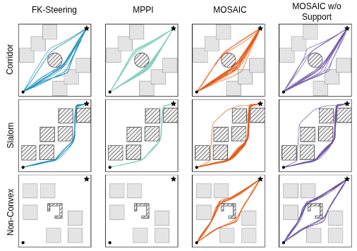

1Department of Mechanical and Process Engineering, ETH Zürich · 2Automatic Control Laboratory, EPFL
†Equal supervision
TL;DR: MOSAIC steers frozen robot diffusion models to new constraints at inference time, without gradients or retraining, while keeping diverse solutions.

Abstract
Generative policies such as diffusion models provide expressive data-driven priors for robot behavior, yet the situations a robot faces at execution time rarely match its training data and impose constraints and objectives the policy never learned. Existing inference-time guidance methods either rely on gradients that can push samples away from the learned prior, or on sampling procedures that can be inefficient, collapse modes, or average them into out-of-distribution predictions.
We introduce MOSAIC, a mode- and support-aware framework for gradient-free inference-time control of robotic diffusion models. MOSAIC treats the initial noise and all stochastic reverse-step perturbations as a joint input to the pretrained denoising process and adapts a distribution over this input using importance weights computed from fully denoised outputs. Physical feasibility and consistency with the learned support are balanced using adaptive penalties, while mode-wise importance-weighted updates preserve modes and avoid destructive averaging.
The same formulation can jointly steer multiple independently trained diffusion models through shared coupling costs, enabling coordinated behavior without requiring a joint model. We evaluate MOSAIC on navigation, dexterous grasping, motion planning with unseen geometry, and collaborative box manipulation with independently trained robot priors. Across these settings, MOSAIC adapts and composes frozen diffusion priors under new deployment constraints without retraining.
Two independently trained single-arm priors lift a pan together.
Pinch grasp, small pan (1.5×).
Motivation
A diffusion model trained offline captures many valid behaviors, such as grasps, paths, or arm motions. At deployment, though, new obstacles, robot-specific constraints, or a second robot appear that the model never saw. We want to adapt its outputs to these new requirements without retraining. Three things make this hard:
Collision checks, inverse kinematics, and grasp stability are often non-differentiable or only meaningful for a fully denoised output, so gradient guidance does not apply.
An output can satisfy the new constraint yet fall outside what the model learned, giving behavior that is feasible on paper but implausible.
Merging paths that pass on opposite sides of an obstacle gives a path through it. Repeated resampling can also drop whole solution families.
Method
A diffusion model generates an output by starting from random noise and denoising it step by step. If we fix the initial noise and the small random perturbations added at each step, the whole process becomes a deterministic function from noise to output. MOSAIC treats the frozen model as this black box. It tries many noise inputs, scores the final outputs with any cost we like, and shifts the sampling distribution toward the better inputs. This is repeated for a few iterations.

Costs such as collisions, kinematic feasibility, or grasp stability are evaluated on fully denoised outputs, where they are most meaningful. They do not need to be differentiable, and the model is never modified.
Outputs are grouped into modes (e.g. passing an obstacle left or right) and each mode is updated separately, so they are not averaged together. A support cost penalizes outputs that are unlikely under the learned prior, and the penalty weights adapt automatically during the iterations.
For two arms, each model gets its own noise input and the pair is scored together with a coupling cost (e.g. a consistent grasp on the same box). Both are updated jointly, so no bimanual model is needed.
Tasks
We evaluate on four tasks with frozen pretrained models. At test time we add constraints the models never saw during training.


Results
Success rate (%) on each task, compared with unguided sampling (DDIM), gradient guidance, and three sampling-based methods (FK steering, Path-Space MPPI, NDPP). All methods use the same frozen model, number of denoising steps, and initial samples. Mean over three seeds; grasping uses 280 grasps.
| Method | Navigation | Grasping | Planning | Planning + tool | Box manipulation |
|---|---|---|---|---|---|
| DDIM | 13.8 | 19.6 | 46.7 | 44.0 | 0.0 |
| Gradient Guidance | 4.4 | 27.5 | 52.7 | 52.7 | 0.0 |
| FK Steering | 90.9 | 51.1 | 51.3 | 50.0 | 24.0 |
| Path-Space MPPI | 45.8 | 21.1 | 58.7 | 52.7 | 29.3 |
| NDPP | 41.7 | 32.9 | 76.7 | 71.3 | 42.7 |
| MOSAIC (Ours) | 80.7 | 53.2 | 86.7 | 79.3 | 78.7 |
Bold = best, underline = second best. A sample counts as a success only if it satisfies the task constraints, e.g. no waypoint collides in navigation, or the box reaches its target within 2 cm and 5° while the two hands stay within 3 cm of their relative distance.
FK steering has the highest navigation success, but only 55.7% of its solutions are unique, so it collapses onto few routes. MOSAIC reaches 80.7% success while 99.5% of solutions stay unique.
The maze walls are known only to the prior, not to the cost. With the support cost, wall collisions drop from 23.2% to 3.9% and success rises from 67.2% to 80.7%.
Two independent single-arm priors reach 78.7% success on box manipulation versus 42.7% for the best baseline. The gap grows with tasks that depend on whole-trajectory properties.
| Method | 2D Navigation | Grasping | Traj. Planning (w/o tool) | Traj. Planning (w/ tool) | Box Manipulation | ||||||
|---|---|---|---|---|---|---|---|---|---|---|---|
| SR ↑ | UNI ↑ | COLL ↓ | SR ↑ | H ↑ | SR ↑ | SPL ↑ | SR ↑ | SPL ↑ | SR ↑ | SPL ↑ | |
| DDIM | 13.8 ±3.5 | 99.2 ±0.8 | 38.8 ±3.2 | 19.6 ±2.4 | 0.75 ±0.11 | 46.7 ±7.0 | 25.0 ±5.0 | 44.0 ±6.0 | 24.6 ±4.6 | 0.0 ±0.0 | 0.0 ±0.0 |
| Gradient Guidance | 4.4 ±3.3 | 99.5 ±0.9 | 50.3 ±3.5 | 27.5 ±2.7 | 0.37 ±0.08 | 52.7 ±8.1 | 26.8 ±4.0 | 52.7 ±10.1 | 26.0 ±4.5 | 0.0 ±0.0 | 0.0 ±0.0 |
| FK Steering | 90.9 ±9.1 | 55.7 ±10.2 | 7.6 ±1.6 | 51.1 ±3.0 | 1.00 ±0.09 | 51.3 ±5.0 | 28.0 ±4.3 | 50.0 ±6.0 | 28.0 ±2.5 | 24.0 ±10.4 | 17.0 ±7.0 |
| Path-Space MPPI | 45.8 ±3.5 | 98.4 ±0.0 | 27.6 ±3.7 | 21.1 ±2.4 | 0.42 ±0.09 | 58.7 ±8.1 | 31.5 ±5.4 | 52.7 ±6.4 | 28.4 ±2.1 | 29.3 ±4.2 | 24.7 ±4.1 |
| NDPP | 41.7 ±3.9 | 95.8 ±1.2 | 30.7 ±3.2 | 32.9 ±2.8 | 0.83 ±0.09 | 76.7 ±4.6 | 41.8 ±2.2 | 71.3 ±12.1 | 40.3 ±6.3 | 42.7 ±4.2 | 32.4 ±3.9 |
| MOSAIC (Ours) | 80.7 ±0.9 | 99.5 ±0.5 | 3.9 ±0.0 | 53.2 ±3.0 | 1.03 ±0.09 | 86.7 ±3.1 | 47.9 ±1.7 | 79.3 ±3.1 | 46.3 ±2.0 | 78.7 ±6.1 | 67.6 ±5.1 |
| w/o support cost | 67.2 ±0.8 | 99.7 ±0.5 | 23.2 ±1.2 | 50.4 ±3.0 | 1.04 ±0.07 | 87.3 ±2.3 | 48.2 ±1.6 | 81.3 ±1.2 | 47.7 ±0.8 | 78.0 ±5.3 | 67.2 ±4.7 |
Bold = best, underline = second best. SR: success rate (%), UNI: unique solutions (%), COLL: maze-wall collisions (%), H: mode entropy, SPL: success weighted by path length (%). Mean ± std over three seeds (navigation: eight mazes with 16 trajectories each; planning and box manipulation: 50 trials per seed); grasping reports binomial standard error over 280 grasps. Sampling-based methods use matched initial populations and DDIM steps.
Hardware
Two independently trained single-arm models, one per arm, lift and move objects together on a dual-arm Franka setup.
Pinch grasp · small pan (1.5×)
Flat-hand and regular grasps · basket (2×)
Supplementary Video
Covers motivation, method, simulation benchmarks, and real-world dual-arm experiments.
Citation
@article{bodmer2026mosaic,
title = {{MOSAIC}: Mode- and Support-Aware Inference-Time Control of Robot Diffusion Models},
author = {Bodmer, Sabrina and Rickenbach, Rahel and Zurbr{\"u}gg, Ren{\'e} and Zeilinger, Melanie N. and Jones, Colin},
journal = {arXiv preprint},
year = {2026}
}